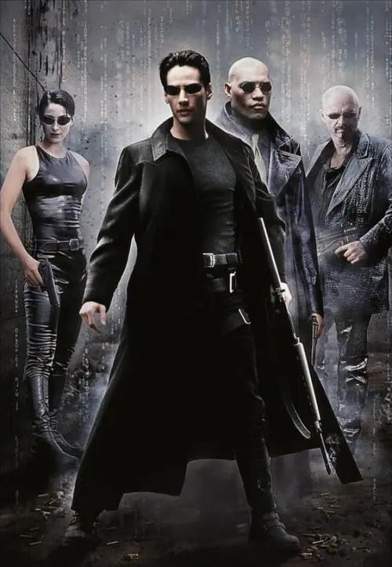

黑客帝国

概况
导演: 莉莉·沃卓斯基 / 拉娜·沃卓斯基
编剧: 拉娜·沃卓斯基 / 莉莉·沃卓斯基
主演: 基努·里维斯 / 劳伦斯·菲什伯恩 / 凯瑞-安·莫斯 / 雨果·维文 / 格洛丽亚·福斯特 / 更多...
类型: 剧情 / 动作 / 科幻 / 奇幻 / 冒险
制片国家/地区: 美国
语言: 英语
上映日期: 1999-03-31日
片长: 136分钟
剧情简介
在矩阵中生活的一名年轻的网络黑客尼奥发现，看似正常的现实世界实际上似乎被某种力量控制着，
尼奥便在网络上调查此事。而在现实中生活的人类反抗组织的船长墨菲斯，也一直在矩阵中寻找传说的救世主，
就这样在人类反抗组织成员崔妮蒂的指引下，两人见面了，
尼奥也在墨菲斯的指引下，回到了真正的现实中，逃离了矩阵。
回到上一页